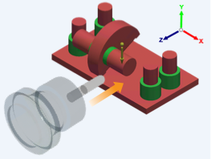

Richtet das Werkzeug in der Richtung aus, die parallel zur Z-Achse der Dreiergruppe liegt und auf das negative Ende der Z-Achse zeigt.
Die Schaltflächen Werkzeugrichtung ermöglichen Ihnen das Festlegen von Werkzeugausrichtungen für Fräsoperationen. Die Werkzeugrichtung wird mit Bezug auf das globale Koordinatensystem ausgerichtet.
 |
Sie können mehrere Werkzeugrichtungen für eine Fräskonfiguration auswählen und so die Mehrseiten-Fertigung ermöglichen.